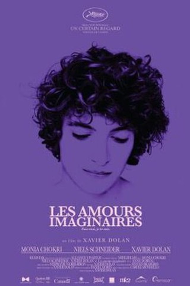

Heartbeats
In brief
Two best friends both fall for the same beautiful young man.
- Directed by
- Xavier Dolan
- Original title
- Les Amours Imaginaires
- Country
- Canada
- Year
- 2010
- Running time
- 95 minutes
- Language
- French
- Festival section
- World Cinema
- With
- Monia Chokri, Niels Schneider, Xavier Dolan, Anne Dorval, Anne-Elisabeth Bosse, Magalie Lepine-Blondeau
- Screenings
- Thu Oct 14, 7:00 PM, Sequoia
Sun Oct 17, 8:15 PM, Sequoia
Source: Festival programme (page 31 of the PDF): Wayback Machine copy; Poster from Wikipedia